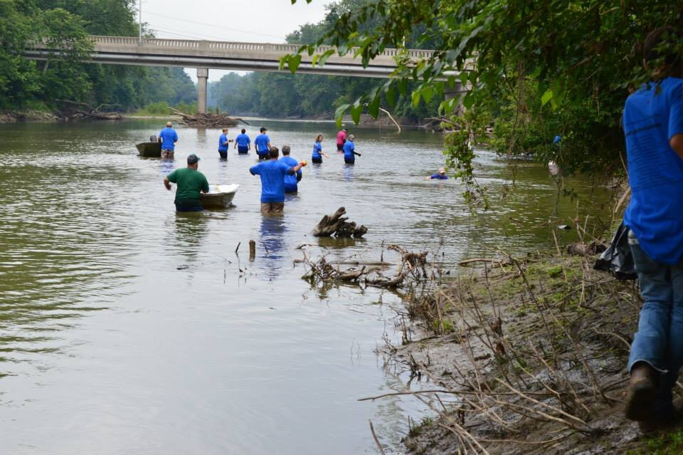
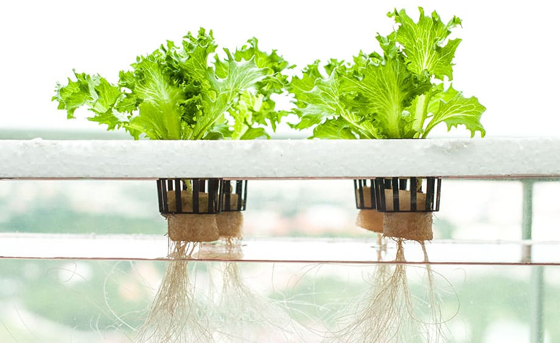
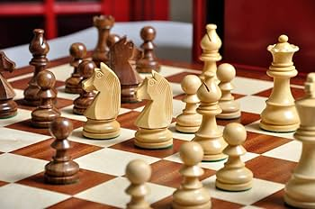

Project
River Cleanup
A locally based and targeted lesson plan. The main goal was to connect all parts of STEM together in one lesson, effectively.
01 / 04
My experience in education comes from both observing classrooms and stepping into a teaching role, primarily in STEM and technology-focused environments. I have supported and led lessons for middle school students, helping them learn tools like CAD and guiding them through hands-on projects. I have taught lessons such as using specific CAD tools step by step, where students created their own designs and applied what they learned.Beyond individual lessons, I have been involved in project-based learning units focused on design, modeling, and problem solving. These projects included topics like robotics, reverse engineering, and basic coding, all centered around real-world application. My approach to teaching focuses on hands-on learning, collaboration, and helping students work through challenges rather than just giving them answers. Overall, my experience has helped me develop a teaching style that prioritizes engagement, real skill development, and strong support for different learning needs.

Project
A locally based and targeted lesson plan. The main goal was to connect all parts of STEM together in one lesson, effectively.

Project
This unit focused on using microbits/arduino to power a self sustaining hydroponics system using upcycled materials.

Project
Introducing 3D modeling to students as early as 5th grade. My pedagogy is that 3D modeling should be as important as other arts.